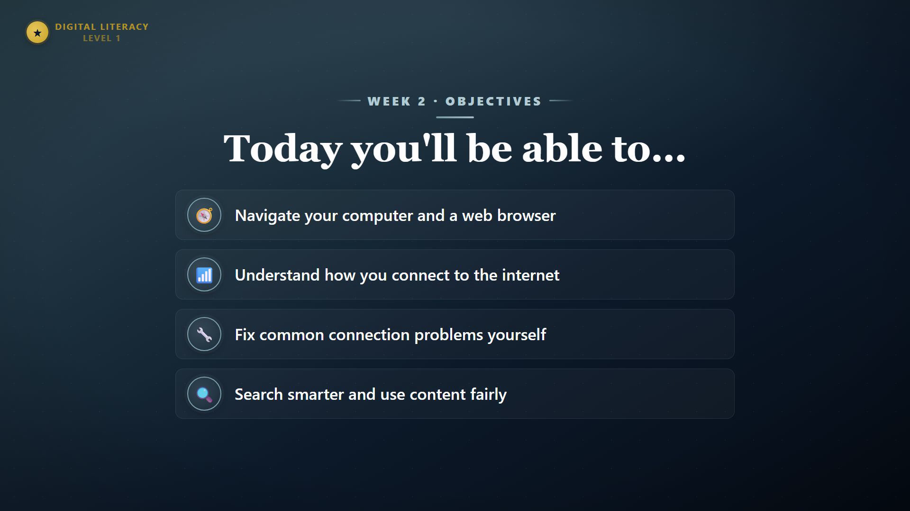
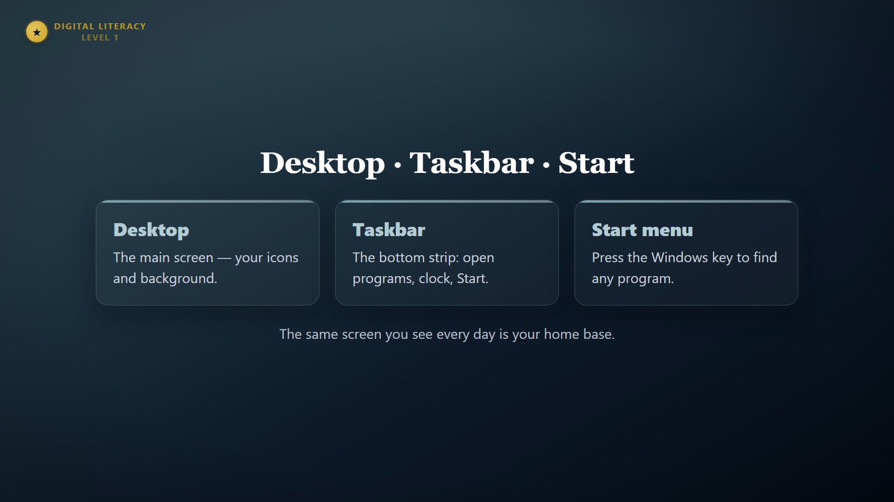
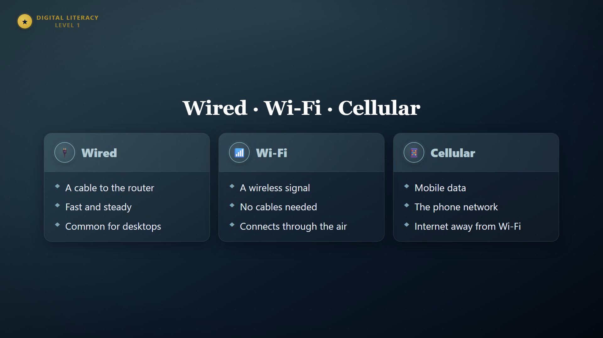
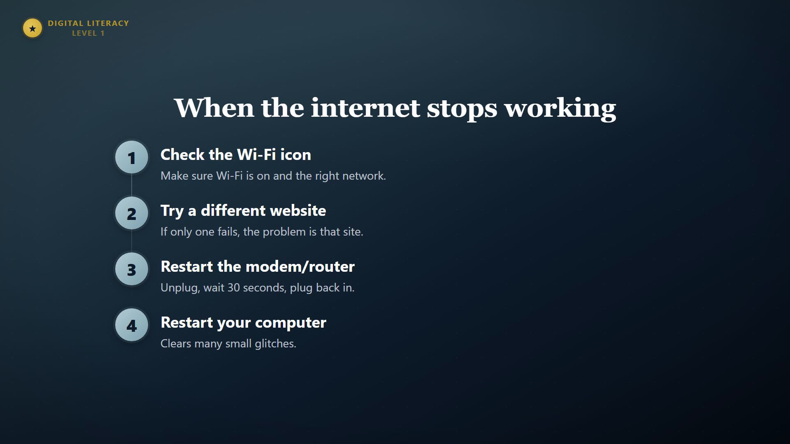
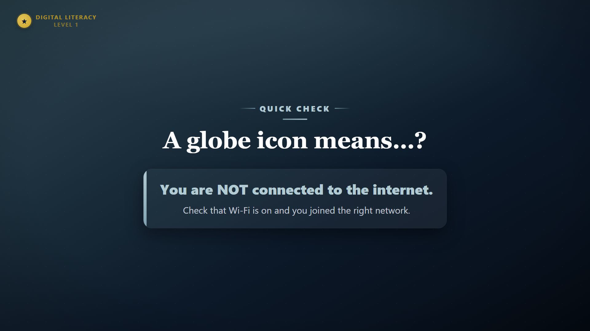
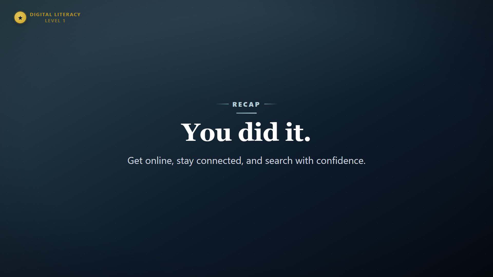

Everything rendered so far, viewable here in your browser. Use the player controls to play with sound.
The exact same Week 2 line, three ways. If you prefer #2 or #3, I'll regenerate all narration that way.
The real thing: 27 scenes on the polished theme-aware engine, cleaner #2 voice, watched straight through (the hands-on lab follows). Blue-gray Week 2 theme. Four scenes use built/themed placeholders until you send the 2 hero images + 2 screenshots. If the player 404s, the render is still finishing — refresh in a few minutes.
The course-wide overview (~2:40), ElevenLabs narration baked in. The short, brand-style intro piece.
The ~69s text-style overview (navy/gold). This is the version slated to be superseded by the full 6–8 min lesson video.
The ~60s overview using your ElevenLabs background images, with Ken Burns motion + soft fades. The "underwhelming vs. the reference" version that kicked off the redesign.
A silent style check of the new theme-aware engine — now with the design-polish pass (refined glass cards, brand badge + wordmark, gradient numeral badges, depth). Shows all five kinds: chapterCard, uiCallout, compare, steps, and the question reveal. ~5s/scene so reveals complete; the real video syncs timing to narration.





